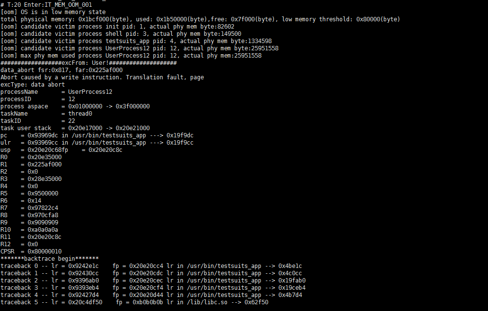

oom¶
Command Function¶
This command is used to query and set the low memory threshold and the page cache reclaim threshold.
Parameter Description¶
Table 1 Parameters
Parameter | Description | Value Range |
|---|---|---|
-i [interval] | Sets the interval for checking the Out Of Memory (OOM) thread task. | 100 ms – 10000 ms |
-m [mem byte] | Sets the low memory threshold. | 0 MB (does not check for low memory) – 1 MB |
-r [mem byte] | Sets the page cache reclaim threshold. | Ranging from the low memory threshold to the maximum available system memory |
-h | –help | Uses the help. | N/A |
Usage¶
If no parameter is specified, the current configurations of the OOM function are displayed.
Example¶
When the system memory is insufficient, the system displays a message indicating the insufficiency.
Output¶

Table 2 Output description
Parameter | Description |
|---|---|
[oom] OS is in low memory state total physical memory: 0x1bcf000(byte), used: 0x1b50000(byte), free: 0x7f000(byte), low memory threshold: 0x80000(byte) | The memory usage of the OS is low. The available physical memory in the entire OS is 0x1bcf000 bytes, 0x1b50000 bytes have been used, and 0x7f000 bytes are available. The current low memory threshold is 0x80000 bytes. |
[oom] candidate victim process init pid: 1, actual phy mem byte: 82602 | The memory usage of each process is printed. The init process actually uses 82602 bytes, and the shared memory is calculated based on the proportion. |
[oom] candidate victim process UserProcess12 pid: 12, actual phy mem byte: 25951558 | The actual memory used by the UserProcess12 process is 25951558 bytes. |
[oom] max phy mem used process UserProcess12 pid: 12, actual phy mem: 25951558 | The process that uses the most memory currently is UserProcess12. |
excFrom: User! | When the system memory is low, the UserProcess12 process fails to apply for memory and exits as a result. |